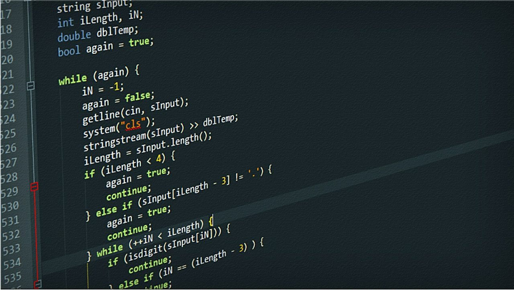

Ismael
Sobre Mim:
Eu gosto bastante de trabalhar na área de site e em outras áreas que envolvam mais software do que hardware.
Minhas principais habilidades são em css e html, contudo me saio bem também em C e em banco de dados.


Experiência e Educação:
Vejo a minha carreira de forma desafiadora, mas apesar de ter que superar desafios dia após dia, suas conquistas são bem gratificantes.
GIT HUB
Meus projetos